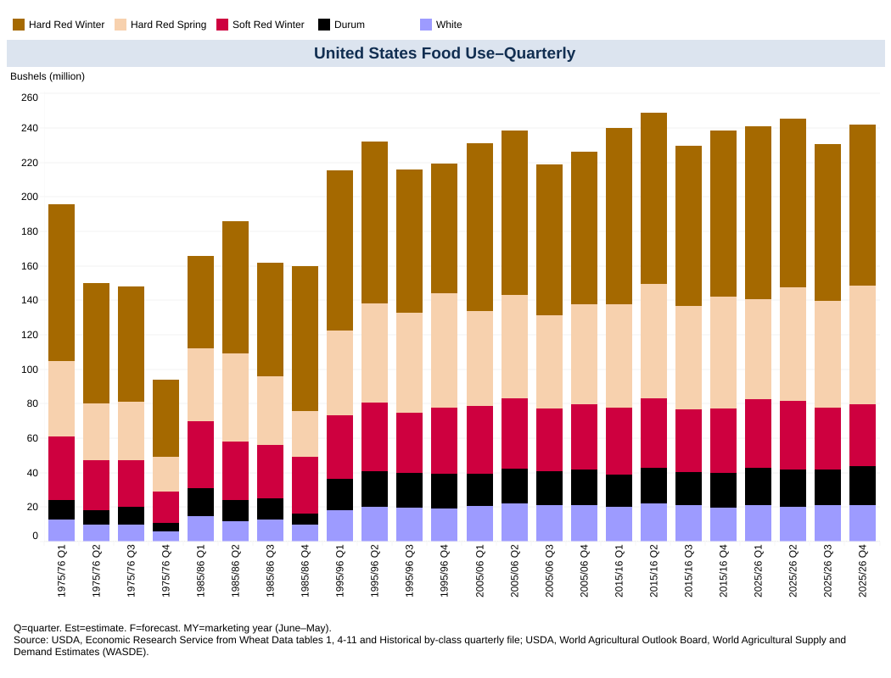
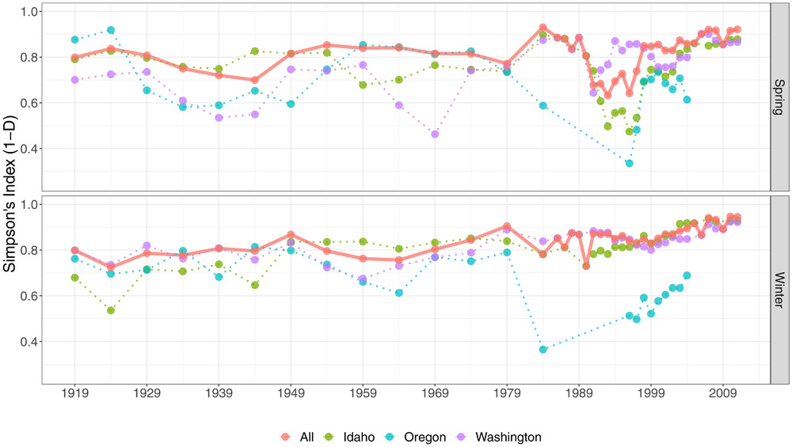

D1 · Story Frame
With the rise of processed foods and nutrition deficiencies amongst the American population, a need has grown for identifying nutrient-dense sources of food. According to the wheat data recorded by the U.S. Department of Agriculture, Economic Research Service, the food use of wheat has not just remained consistent over the past 50 years, but average use of each wheat class has remained consistent as well.
It is clear that wheat is still a staple component of the American diet. Wheat has been modified substantially over the years. To ensure our popular wheat varieties have not significantly declined in their biodiversity, Sthapit lead a research study on Genetic diversity in historical and modern wheat varieties of the U.S. Pacific Northwest which lead to surprising results. While there was a small dip in genetic diversity around the early 1960's and early 1990's (see editorial figure 2), "the level of diversity was back to the pre-1930 varieties [by the year 2000 and onward]" (Sthapit, 2020). The study showed that as wheat breeding evolved, while there were occasional dips in genomic diversity, on average it has been maintained over the past 100 years. Having biodiversity in wheat varieties contributes to the type of nutrition that is consumed from the food directly.
As wheat is a staple food in our diets and a biodiverse crop, different classes of wheat carry different nutrient profiles. Currently, markets offer many different wheat-based products, but with different nutrient profiles, it is important to determine which wheat class delivers the highest nutrient density. It is recommended to get nutrition from diverse sources, but to combat common nutrient deficiencies it can be beneficial to prioritize the consumption of wheat with the highest quantity of daily value nutrients.
According to the Wheat Class Nutrition Comparison table below, the most nutrient-dense variety can actually be found in two varieties, soft white and durum wheat. Soft white wheat is a nutrient-dense source for daily value micro-nutrients, containing the highest quantities for vitamins, minerals, and fiber (with the exception of natural sugars and sodium--which are recommended to be limiting in consumption). For macro-nutrients, durum wheat has the highest source of calories, protein, and fat. The har red winter variety is a close second place for macro-nutrients, with the same amount of calories and a higher source of carbohydrates.
Throughout the decades wheat has maintained its place as a staple in our diets and its genetic diversity. Depending on the dietary needs of an individual, there are benefits for consuming a variety of classes of wheat. However, if you are planning on maximizing your nutrient consumption, prioritizing durum and soft white varieties may help you reach your daily value nutrient goals easier.
D2 · Editorial Figures

Source: Quarterly reports from the U.S. Department of Agriculture's Economic Service Research on Wheat Data - Data Visualization.

Source: Sthapit, Genetic Diversity in historical and modern wheat varieties of the U.S. Pacific Northwest, Figure 2.
D3 · Wheat Class Nutrition Comparison per 100g Portion
| Nutrient | Hard Red Winter | Hard Red Spring | Soft Red Spring | Soft White | Durum |
|---|---|---|---|---|---|
| KCAL | 375 | 329 | 331 | 340 | 375 |
| Protein | 11g | 15.4g | 10.4g | 10.7g | 16.6g |
| Carbs | 77.9g | 68g | 74.2g | 75.4g | 70.9g |
| Fat | 2.21g | 1.92g | 1.56g | 1.99g | 2.72g |
| Fiber | 10.6g | 12.2g | 12.5g | 12.7g | 7.5g |
| Vitamin D | 0 | 0 | 0 | 0 | 0 |
| Potassium | 388mg | 340mg | 397mg | 435mg | 376mg |
| Iron | 2.8mg | 3.6mg | 3.21mg | 5.37mg | 3.71mg |
| Calcium | 33mg | 25mg | 27mg | 34mg | 23mg |
| Sodium | <2.49mg | 2mg | 2mg | 2mg | <2.48mg |
| Sugar | 0.97g | 0.41g | 0.41g | 0.41g | 0.8g |
The nutrients chosen to compare values for each wheat class were chosen to reflect items that are required on a nutrition label (determined by the U.S. Food & Drug Administration). The data source for each wheats nutrition information can be found on the U.S. Department of Agriculture's FoodData Central Food Details page.
D4 · Responsive SVG
D5-D6 · System and Documentation
Extend Module 1 patterns, then link your sources, asset credits/licenses, test record, transformation notes, and AI disclosure.
Sources
Sthapit SR, Marlow K, Covarrubias DC, rt al. (2025, Aug. 13). Genetic diversity in historical and modern wheat varieties of the U.S. Pacific Northwest. Crop Science, Volume 60, Issue 6.
https://doi.org/10.1002/csc2.20299.
U.S. Department of Agriculture, Economic Research Service. (2026, Oct. 13). Wheat Data. Wheat-By-Class-Quarterly.xlsx (1975/76, 1985/86, 1995/96, 2005/06, 2015/16, 2025/26).
https://www.ers.usda.gov/data-products/wheat-data.
U.S Food & Drug Administration. (2024 Mar. 5). Daily Value on the Nutrition and Supplement Facts Labels. U.S Food & Drug Administration.
https://www.fda.gov/food/nutrition-facts-label/daily-value-nutrition-and-supplement-facts-labels.
U.S Food & Drug Administration. (2024 Mar. 5). What's on the Nutrition Facts Label.
https://www.fda.gov/food/nutrition-facts-label/daily-value-nutrition-and-supplement-facts-labels.
U.S. Department of Agriculture, Agricultural Research Service. (2026, Oct. 29). Winter wheat, hard red, puffed, organic. FoodData Central Food Details.
https://fdc.nal.usda.gov/food-details/2779246/nutrients.
U.S. Department of Agriculture, Agricultural Research Service. (2026, Oct. 29). Wheat, hard red spring. FoodData Central Food Details.
https://fdc.nal.usda.gov/food-details/168889/nutrients.
U.S. Department of Agriculture, Agricultural Research Service. (2026, Oct. 29). Wheat, soft red winter. FoodData Central Food Details.
https://fdc.nal.usda.gov/food-details/168891/nutrients.
U.S. Department of Agriculture, Agricultural Research Service. (2026, Oct. 29). Wheat, soft white. FoodData Central Food Details.
https://fdc.nal.usda.gov/food-details/169720/nutrientss.
U.S. Department of Agriculture, Agricultural Research Service. (2026, Oct. 29). Wheat, durum, puffed. FoodData Central Food Details.
https://fdc.nal.usda.gov/food-details/2779254/nutrients.
USDA. (2026, Oct. 13). United States Food Use--Quarterly [stacked bar graph]. Wheat Data - Data Visualization.
https://www.ers.usda.gov/data-products/wheat-data/wheat-data-visualization
Test Record
Transformation Notes
Initially, when I was looking through the raw wheat data, I was expecting to see a change in food use and the dominant class of wheat used to fluctuate. Upon reviewing the data, I discovered that the wheat not only remained steady in use, but the percent of wheat used of each class was also fairly consistent over a 50 year period. This lead me to wondering if the genetic makeup of the wheat varieties had been significantly altered altered or changed as the prevalence of celiac's disease has become a trending topic. I soon further discovered my assumptions were wrong again. The research article from Sthapit proved that genetic diversity only had a small period of decline, but was quickly corrected to maintain genetic diversity that was present 100 years ago.
With my assumptions incorrect, I looked at what the data itself was telling me. Consistent use of wheat over years was a reflection that wheat has kept its place as a staple in our diets. The food use of different classes of wheat showed a dominant use of hard red winter wheat over other varieties. Use of different classes never gained a larger use. Keeping on the theme of nutrition, I decided to use the information to determine which wheat variety was the most nutrient-dense out of all the classes. This knowledge can help promote other wheat varieties that will help individuals meet daily value goals outlined by the FDA.
After comparing the nutrients of the different classes (using the nutrients that are required to be listed on nutrition labels as those are most commonly missed in public diets), it was confirmed that durum wheat had the highest nutrients for macro-nutrients and soft white wheat had the highest nutrients for micro-nutrients and fiber. The following infographic SVG highlights the top nutrients for the two wheat varieties that were proven to be the most nutrient dense. As those varieties are used far less that the favored hard red winter wheat, seeing the nutritional values of the other varieties may promote a higher use in the alternatives and ultimately help daily nutritional needs be met.
AI Disclosure
No AI was used in this assignment.